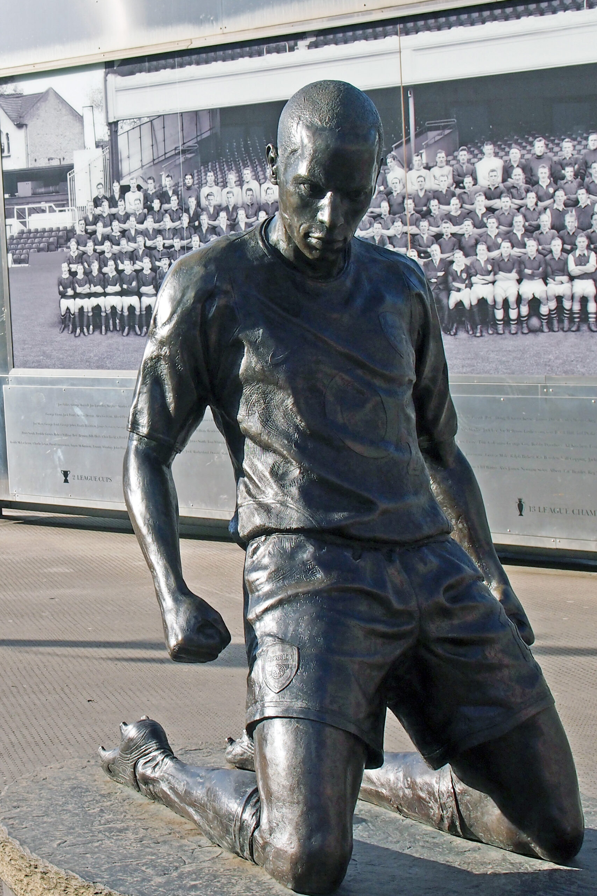
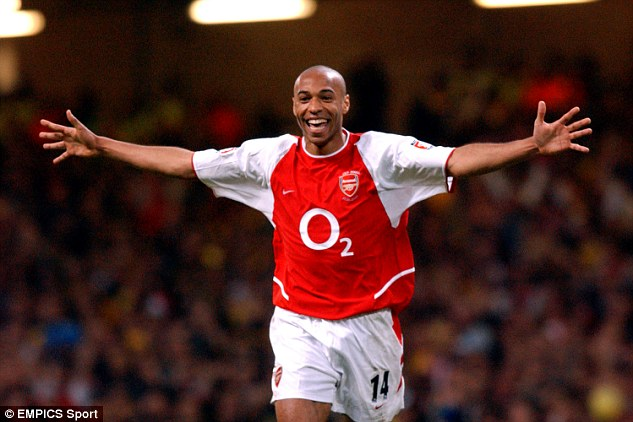
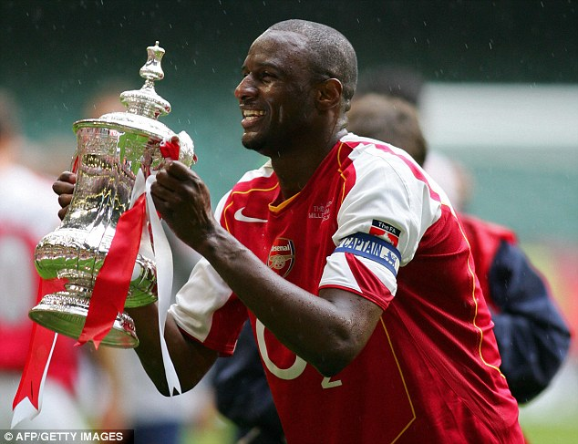
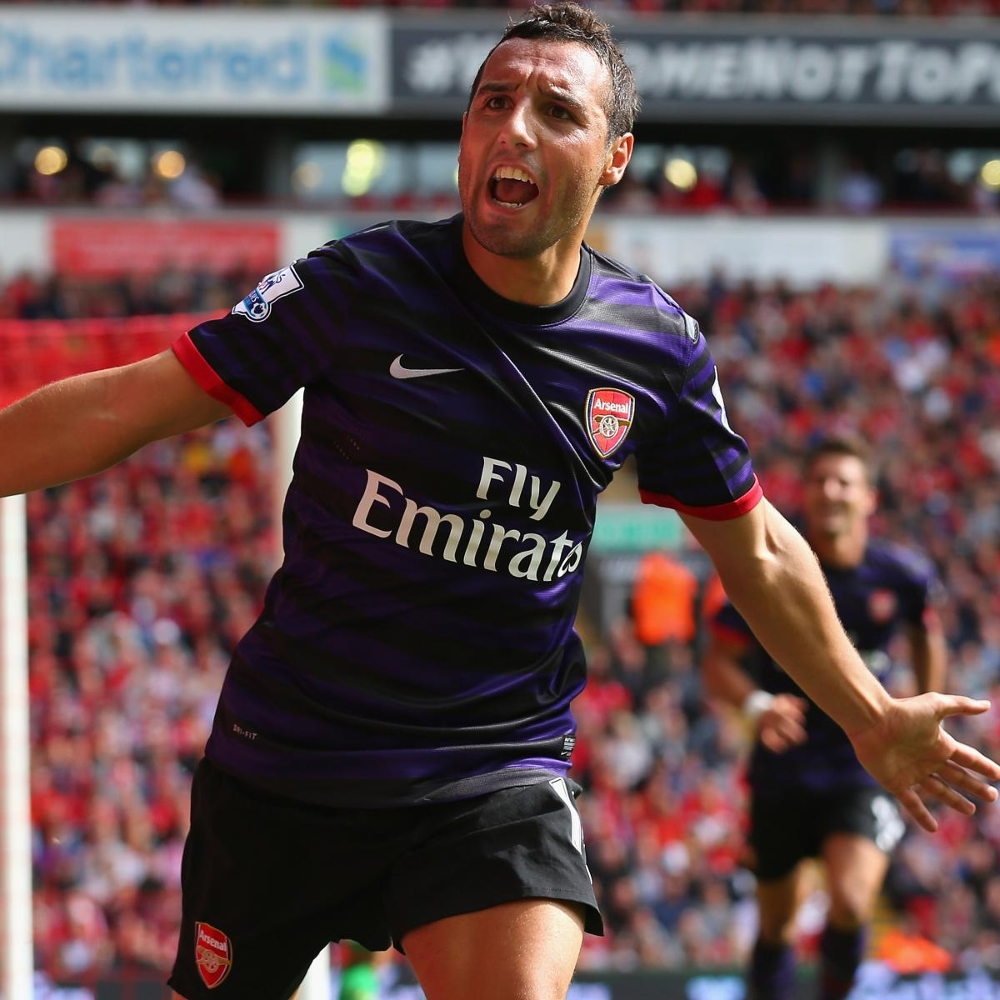
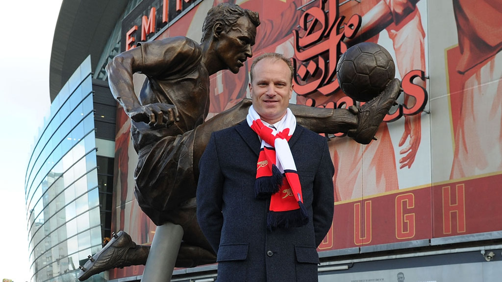
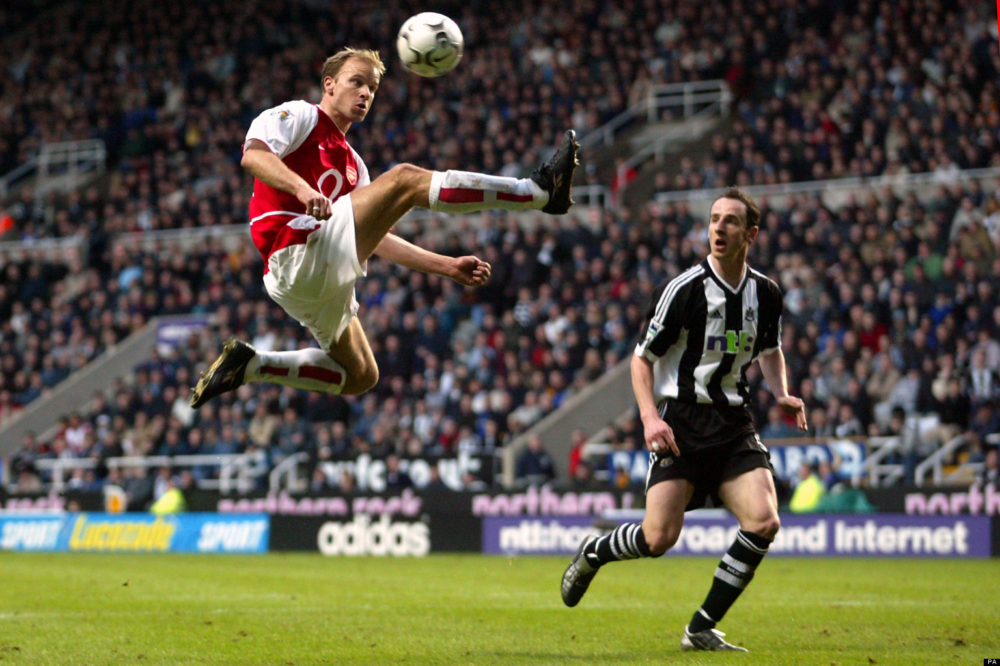
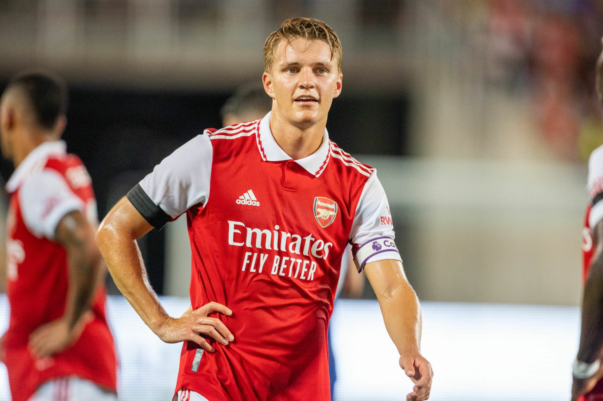

From our all-time leading scorer, to a defensive-midfielder rock of a team captain, Arsenal has had legends put on that shirt and cement themselves in the memories of fans forever! Below is a list of some of my favorite Arsenal players.
Thierry Henry
Nobody can mention Arsenal Football Club without thinking of Thierry Henry. When he was brought into Arsenal as a relatively unknown French player from AS Monaco, nobody other than Manager Arsene Wenger knew what weapon we had acquired. Henry is Arsenal's all-time leading goalscorer with 228 goals to his account. In his prime he was absolutely unstoppable to the poor defenders whose job it was to stop him. He was fast, strong, and unafraid to run the ball from one end of the pitch to the other. All Arsenal fans wil have Henry on their Top 3 All-Time Best Arsenal Players list.


This moment honestly should've been included in the Most Insane Moments, but this is such a special moment for Henry, it's impossible to rank it. What's so crazy about this moment was that we had only signed Henry on-loan when he was with the New York Red Bulls and he was trying to get fit for their upcoming season, and then he went and scored the winning goal in this match!
Patrick Vieira
Patrick Vieira is the Captain of Captains. If you looked up the word LEADERSHIP in the dictionary, you'll see a picture of Vieira. He is what every defensive midfielder should want to be. He was tall, strong, fast, and never backed down from a physical challenge or dirty play. A strong midfield is the difference between a strong team and a weak team. It's no wonder that the last time Arsenal won the league, Patrick Vieira was our Captain.

Santi Cazorla
You'd swear Santi Cazorla played with a magnet in his cleats! He was outstanding with the ball and wasn't afraid of a challenge. He was such a small player, but he gave 100% every single time and never ever got bullied off the ball by bigger stronger players. Cazorla is on every Arsenal fan's list of the best Emirates Era players. In fact, he is my favorite Emirates Era player.

Dennis Bergkamp
Dennis Bergkamp is one of the most talented players in the history of world football. Any Dennis Bergkamp highlight video will have your jaw on the floor. He was so graceful with the ball it was like a performance piece from him. His talent at controlling how the ball fell at his feet is used by Arsenal coaches to help train players on ball control and first touch techniques.
A not-so-fun fact about Dennis Bergkamp is that he is afraid of flying and never flew to away games. The team would have to play without him when we had away games in other countries. He chose to travel by car or bus to domestic away fixtures. The fun fact is that his nickname was The Non-Flying Dutchman (Because he is Dutch)


Martin Odegaard
Martin Odegaard is the current Captain of Arsenal. He started his career as a teenager with Real Madrid and made his debut when he was only 15! Arsenal originally got him on a 1 year loan deal and we quickly made the move to sign him to a permanent contract. His movement with the ball reminds me of Santi Cazorla, it really appears that he has a magnet in his cleats! He runs nonstop during games and inspires his teammate to hustle. He never stops pressing the opposition and always puts for the effort. I seriously can't recall a time where I noticed he wasn't fully interested in a match. He is one of the most creative midfielder in the league, and quite possibly in the world. It is not shocking whatsoever that has been chosen as Player of the Season twice in a row!

This is certainly not a comprehensive list of notable Arsenal players. That would take me ages to complete. This club is full of such amazing characters with their own playing styles that it males me proud to be a fan and see the new upcoming generations. I look very forward to the next decades as an Arsenal fan to see which academy players will become the next Henry, Bergkamp, or Vieira!